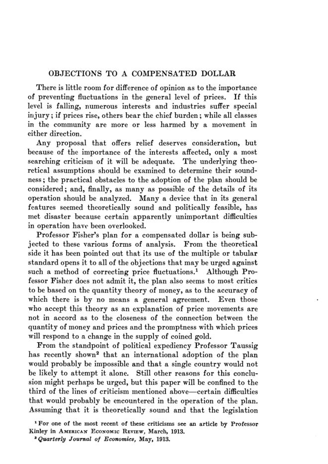

Patterson e os contratos que o dólar compensado desfaria
Leitura: 8 min
E. M. Patterson aceita, para argumentar, que o dólar compensado de Irving Fisher seja correto em teoria e pergunta se funcionaria. Encontra dois obstáculos: os preços em queda e o câmbio.


O índice de preços da Bradstreet marcava US$ 9,04 em julho de 1907. Em junho de 1908 estava em US$ 7,72, uma queda de mais de 14%. E. M. Patterson, da University of Pennsylvania, usa esse número para mostrar que o plano de estabilização de Irving Fisher teria de lidar, de tempos em tempos, com quedas de preços maiores do que o próprio Fisher previa.
O artigo, no número de dezembro de 1913 da American Economic Review, começa por uma concordância: há pouco espaço para divergir sobre a importância de evitar oscilações do nível geral de preços, que prejudicam uns quando caem e outros quando sobem. Mas um plano com efeitos tão amplos, diz o autor, merece a crítica mais minuciosa, e muitos projetos sólidos no conjunto fracassaram por detalhes de operação.
O que era o dólar compensado?
Fisher propunha manter o padrão-ouro, mas mudar periodicamente a quantidade de ouro que valia um dólar, conforme um número-índice de preços. Se os preços subissem, a Casa da Moeda exigiria mais ouro em barra para cada dólar cunhado (o “ouro de cunhagem”); a diferença entre esse ouro e o contido na moeda seria a “senhoriagem”. Como o dólar ficaria mais caro em ouro, os preços tenderiam a voltar ao ponto de partida.
Patterson lembra que o plano já fora atacado por outros lados. Na teoria, por usar um padrão tabular, baseado em índice, e por depender da teoria quantitativa da moeda, sobre a qual não havia acordo. Na política, Taussig mostrara que uma adoção internacional seria provavelmente impossível e que nenhum país tentaria sozinho. O artigo se limita à terceira linha: supondo a teoria correta e a lei aprovada, o mecanismo seria praticável?
Por que os preços em queda são o problema?
O próprio Fisher admitia que a senhoriagem nunca poderia ser negativa. Se o ouro exigido pela Casa da Moeda ficasse abaixo do ouro contido no dólar, qualquer comerciante de ouro ganharia derretendo moedas e trocando o metal por mais moedas, indefinidamente, à custa do governo. O plano, portanto, só podia frear uma alta de preços, não uma queda, a menos que se mudasse o próprio dólar.
Fisher oferecia três respostas: os preços continuariam a subir por muitos anos; o peso do dólar poderia ser reduzido dos 25,8 grãos atuais para 20 ou 15; ou, se o índice caísse bem abaixo do par, as moedas de ouro seriam recolhidas e trocadas por certificados. Patterson examina cada uma. O recolhimento esbarraria no hábito do público e nas necessidades dos bancos; e certificados resgatáveis no mesmo dólar nada mudariam, enquanto certificados com menos de 100% de reserva seriam, na prática, notas do governo.
Reduzir o peso do dólar, por sua vez, enfrentaria uma tempestade de protestos e, pior, desorganizaria os contratos longos. Havia títulos que prometiam “dólares”, outros que prometiam “dólares-ouro” e outros ainda que especificavam o padrão atual de peso e finura. Os mais de um bilhão de dólares em certificados de ouro em circulação só podiam ser resgatados, sem quebra de promessa, em dólares de 25,8 grãos.
“A redução do peso do dólar resultaria num reajuste imediato e desastroso dos valores relativos desses títulos.” (“A reduction in the weight of the dollar would result in an immediate and disastrous readjustment”)
Aplicar a regra só a contratos futuros não resolveria. Muitos arrendamentos corriam por 99 anos, alguns por 999, e uma emissão de obrigações da West Shore Railroad vencia em 1º de janeiro de 2361. Por gerações conviveriam dívidas em dólares pesados e leves, e cada comprador de um título teria de verificar seus termos de pagamento. A simples possibilidade de redução introduziria nos preços dos títulos um elemento especulativo proporcional ao prazo.
Os preços continuariam subindo?
A primeira resposta de Fisher dependia de uma previsão. Patterson não a refuta; observa que ela se apoia na teoria quantitativa e que as autoridades discordavam sobre o futuro da produção de ouro. Cita George E. Roberts, diretor da Casa da Moeda, para quem não se podia prever aumento material da produção nos dez anos seguintes, e banqueiros londrinos como Sir Felix Schuster e Sir Edward Holden, com opiniões semelhantes.
Mesmo numa tendência de alta, as reações periódicas obrigariam a escolher o ponto de partida. Tomar o nível baixo de junho de 1908 significaria, em maio de 1913, com o Bradstreet em US$ 9,13, uma alta de cerca de 18% a compensar de imediato: a Casa da Moeda teria de exigir mais de 30 grãos de ouro por dólar cunhado. Quem tivesse ouro não cunhado sofreria uma depreciação súbita, e o governo, sem senhoriagem acumulada, ficaria exposto a pedidos de resgate.
Tomar o nível de 1913 deixaria o plano exposto à próxima queda, que o próprio Fisher, ao prever uma crise, tornava provável. Patterson conclui que nenhuma modificação permite aplicá-lo com segurança contra preços em queda, e que um remédio que é, na melhor hipótese, meio remédio já seria discutível.
O que aconteceria com o câmbio?
A segunda objeção supõe que o plano seria adotado por um só país. Se os Estados Unidos aumentassem o ouro exigido por dólar, o minerador mandaria seu ouro para a Inglaterra e venderia cambiais contra ele, até que a paridade com a libra baixasse a um novo nível; se os preços caíssem, o movimento se inverteria. O próprio Fisher, perguntado pelo New York Times se o plano não desorganizaria o comércio exterior, respondera que sim.
“Sim, com certeza. O câmbio se tornaria incerto e variável.” (“Yes, most certainly. Foreign exchange would become uncertain and variable.”)
Patterson mostra o tamanho do problema. A libra à vista oscilava, em geral, entre US$ 4,84 e US$ 4,89, e diferenças menores que essa já bastavam para a arbitragem e para os contratos de câmbio a termo com que bancos e exportadores se protegiam. Com ajustes mensais ou trimestrais, a faixa se alargaria. Usando os próprios cálculos de Fisher sobre como o plano teria funcionado desde 1896 ou desde dezembro de 1903, ele monta uma tabela das paridades resultantes, que se afastam bastante do par de US$ 4,8665.
Para mostrar o custo de um câmbio instável, o autor recorre à experiência dos países de padrão prata. Cita o discurso orçamentário de Sir David Barbour para a Índia em 1891, que pedia um sistema em que as oscilações não fossem grandes nem frequentes, e o relatório de 1903 da comissão americana de câmbio internacional sobre a paralisia do comércio nesses países. Lembra ainda o caso de um banqueiro que perdeu dinheiro com um saque sobre a Cidade do México porque a prata subiu entre a emissão e o pagamento.
Como o crescimento do comércio exterior americano dependia de créditos mais longos aos importadores estrangeiros, mais longo seria também o período exposto às oscilações. A conclusão é que o dólar compensado, embora se pareça em alguns aspectos com o padrão de câmbio-ouro, como dizia Fisher, carece do traço mais importante deste: o governo pronto a comprar e vender cambiais a preço estável. A única forma de obter essa estabilidade seria adotar abertamente o padrão de câmbio-ouro.
Na minha leitura
Na minha leitura, a força do artigo está em aceitar a teoria do adversário e atacar a operação. Patterson não discute se a moeda determina os preços; pergunta o que acontece com um título de 999 anos, com um certificado de ouro já emitido e com uma cambial de seis meses quando a unidade monetária muda por decreto a cada trimestre. São custos de transição e de coordenação que um modelo agregado do nível de preços não mostra.
O argumento também expõe uma assimetria do plano: a regra funcionava bem para frear a alta, mas não para conter a queda sem mexer no peso legal do dólar, e é justamente nas quedas que os contratos fixos em moeda mais pesam. A crítica do câmbio antecipa um dilema permanente das economias abertas: estabilizar os preços internos por uma regra própria implica aceitar um câmbio móvel, com os custos que isso traz para o comércio e o crédito.
Glossário
- Dólar compensado
- proposta de Irving Fisher de variar periodicamente o peso de ouro do dólar conforme um índice de preços, para estabilizar o poder de compra da moeda.
- Senhoriagem
- no plano de Fisher, diferença entre o ouro exigido pela Casa da Moeda e o ouro contido no dólar cunhado.
- Grão
- unidade de peso, de cerca de 65 miligramas; o dólar de ouro americano tinha 25,8 grãos de ouro com liga.
- Padrão tabular
- padrão monetário definido por um número-índice de preços de várias mercadorias, e não por um metal só.
- Padrão de câmbio-ouro
- sistema em que o país não cunha ouro para circulação, mas o governo compra e vende cambiais sobre um centro de padrão-ouro a preço estável.
- Par de câmbio
- taxa de câmbio entre duas moedas-ouro dada pela relação entre seus conteúdos de ouro; US$ 4,8665 por libra esterlina.
Fontes
- Objections to a Compensated Dollar — E. M. Patterson (University of Pennsylvania) (pp. 863–874). JSTOR · Internet Archive (PDF)
- Edição completa, com os demais artigos: Nº 127 do Arquivo.
Documento em domínio público (EUA, publicado antes de 1931), via JSTOR Early Journal Content e Internet Archive. Resumo e comentário do autor deste site, sem afiliação com a American Economic Association. Encontrou um erro? Escreva: a correção é publicada no próprio texto, com data.
← Hollander e a reserva que não se vendia ↑ Nº 127 · A reserva que não se vendia e as objeções ao dólar compensado